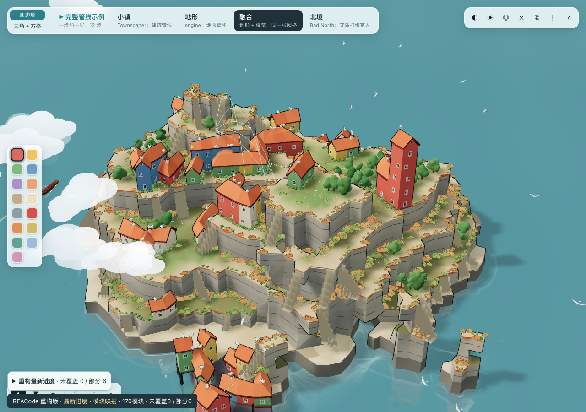
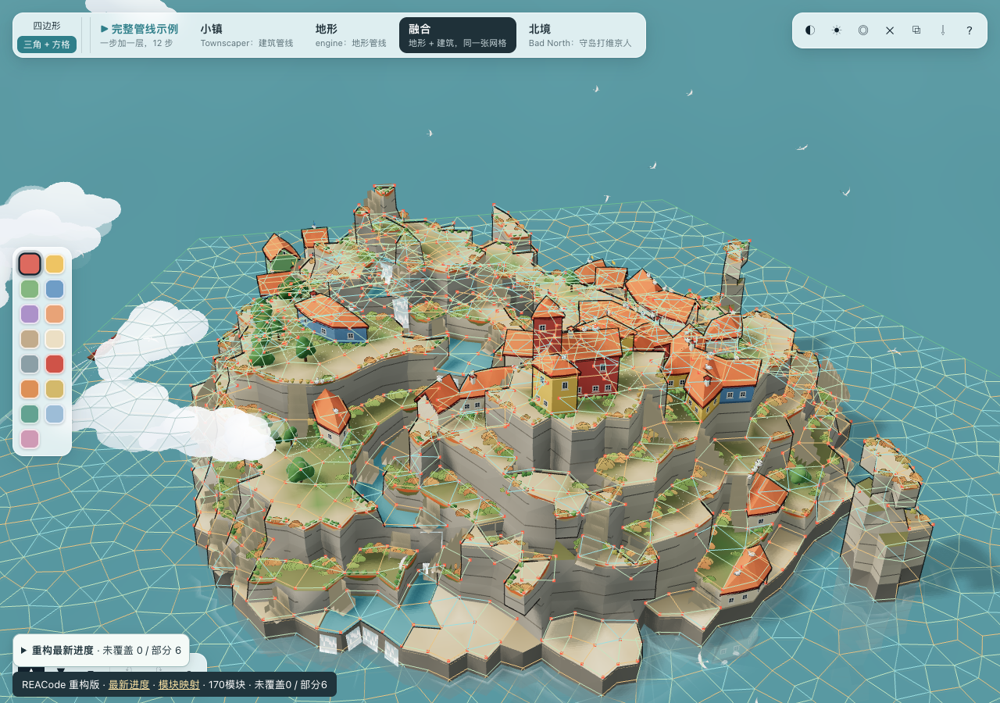
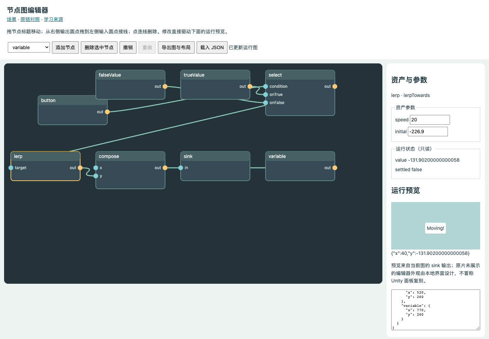

104 个已有能力开关接进当前场景菜单（48 场景、11 渲染、45 北境）；新增场景碰撞弹道、共享 World 导航诊断、真实节点编辑器。默认状态保留，不把菜单接入算作新算法完成。



双网格菜单与渲染回执 · 真实学习工坊分类 · 实际鼠标编辑回执
菜单45个北境开关逐项执行并恢复；11个渲染开关逐项运行。焦黑两效果组合曾留下黑斑，已修共同顶点色所有权，最后一项退出才还原最早原色，双网格均验证完整恢复。失败与改前代码保留。
原6条待学习均有既存全帧记录；核销1条过时学习排期、完成1条节点编辑器实现，剩余动作明确区分实现与来源不足。本轮没有重新观看全部来源，没有完成全部待实现、全部290文件、战斗箭矢弹道替换、原作精确素材或长时性能。实际数目随并行上游记录变化，由页面实时显示；源文字或证据变动会重新核对。